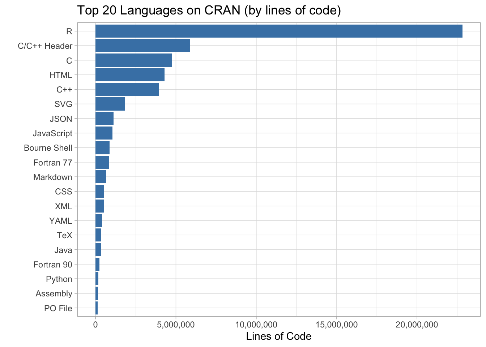

2019 - Week 46 - CRAN
A copy of the RMarkdown file can be downloaded from here
RMarkdown with Parameters
This document makes use of parameters. These can be included using the params argument in the preamble of the markdown document.
---
title: "2019 - Week 46 - CRAN"
params:
top_n:
label: "Top n languages"
value: 20
input: slider
min: 1
max: 100
step: 1
perc_comparison:
label: "Language to Compare"
value: R
input: select
choices: ["R", "C", "HTML", "C++", "SVG", "JavaScript"]
---params$top_n and params$perc_comparison can
be used throughout the document as variables.
The document can be knitted with the default values by clicking the
Knit button or specific values using
rmarkdown::render("Week46_crand.Rmd, params = list(top_n = 20, perc_comparison = "R"))".
A user interface can be used by selecting
Knit with Parameters from the dropdown menu for
Knit, or
rmarkdown::render("MyDocument.Rmd", params = "ask").
See here for more information on parameters.
library(ggplot2)
library(scales)
library(dplyr)cran_code <-
readr::read_csv("https://raw.githubusercontent.com/rfordatascience/tidytuesday/master/data/2019/2019-11-12/loc_cran_packages.csv")Top 20 Languages
cran_code %>%
group_by(language) %>% # group by langauge
summarise(lang_count = n(), # calc number of packages by language
lang_lines = sum(code) # calc number of lines of code by language
) -> cran_language_summary
cran_language_summary %>%
top_n(params$top_n, lang_count) %>% # filter by top n using params$top_n
ggplot(aes(x = reorder(language, lang_count, decreasing = T) , y = lang_count)) +
geom_histogram(stat = "identity", fill = "steelblue") +
scale_y_continuous(labels = comma) + # display large numbers with a comma
coord_flip() + # flip plot to see language names better
labs(title = paste0("Top ", params$top_n," Languages on CRAN (by number of packages)"), y = "Number of Packages", x = "")
cran_language_summary %>%
top_n(params$top_n, lang_lines) %>% # filter by top n using params$top_n
ggplot(aes(x = reorder(language, lang_lines, decreasing = T) , y = lang_lines)) +
geom_histogram(stat = "identity", fill = "steelblue") +
scale_y_continuous(labels = comma) +
coord_flip() +
labs(title = paste0("Top ", params$top_n," Languages on CRAN (by lines of code)"),
x = "", y = "Lines of Code")
% of R Used
Out of the 14,699 packages, 1 package has no code, which leaves 14,698 packages which contain some code. Of those packages containing some code 11 contain no R code and 5,509 packages contain only R code.
# must be a neater way of calculating this
cran_code %>%
group_by(pkg_name) %>% # group by package name
summarise(total_lines = sum(code)) %>% # calc total lines
left_join(
cran_code %>%
filter(language == params$perc_comparison) %>% # filter R only
select(pkg_name, code), # select relevant variables
by = "pkg_name" # join using `pkg_name`
) %>%
mutate(code = ifelse(is.na(code), 0, code), # change na's to 0
perc_lang = code/total_lines) %>% # calc % of R
na.omit() -> cran_perc_lang## Warning in left_join(., cran_code %>% filter(language == params$perc_comparison) %>% : Each row in `x` is expected to match at most 1
## row in `y`.
## ℹ Row 9511 of `x` matches multiple rows.
## ℹ If multiple matches are expected, set
## `multiple = "all"` to silence this warning.cran_perc_lang %>%
ggplot(aes(perc_lang)) +
geom_histogram(fill = "steelblue", colour = "black", binwidth = 0.1) +
scale_x_continuous(labels = percent) + # use % on x axis
labs(title = paste0("% of ", params$perc_comparison, " used in packages on CRAN (", nrow(cran_perc_lang), " packages)"),
x = "", y = "No. of Packages")